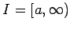
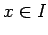
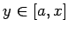
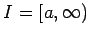
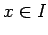
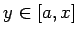

Inhalt Index DeskTop Bronstein

 Lineare Integralgleichungen Volterrasche Integralgleichungen Theoretische Grundlagen
Lineare Integralgleichungen Volterrasche Integralgleichungen Theoretische Grundlagen


Eine VOLTERRAsche Integralgleichung 2. Art hat die Gestalt
Die Lösungsfunktion  ist für Argumente x aus dem abgeschlossenen Intervall I=[a,b] bzw. aus dem halboffenen Intervall  gesucht. Man kann folgende Aussage über die Lösung der VOLTERRAschen Integralgleichung 2. Art treffen. Sind die Funktionen f(x) für  und K(x,y) auf dem Dreiecksbereich und  als stetig vorausgesetzt, dann existiert genau eine, für stetige Lösung
ist für Argumente x aus dem abgeschlossenen Intervall I=[a,b] bzw. aus dem halboffenen Intervall  gesucht. Man kann folgende Aussage über die Lösung der VOLTERRAschen Integralgleichung 2. Art treffen. Sind die Funktionen f(x) für  und K(x,y) auf dem Dreiecksbereich und  als stetig vorausgesetzt, dann existiert genau eine, für stetige Lösung  der Integralgleichung. Für diese Lösung gilt:
der Integralgleichung. Für diese Lösung gilt:
In vielen Fällen können VOLTERRAsche Integralgleichungen 1. Art in Integralgleichungen 2. Art überführt werden. Die Aussagen zur Existenz und Eindeutigkeit der Lösung gelten dann in modifizierter Form.